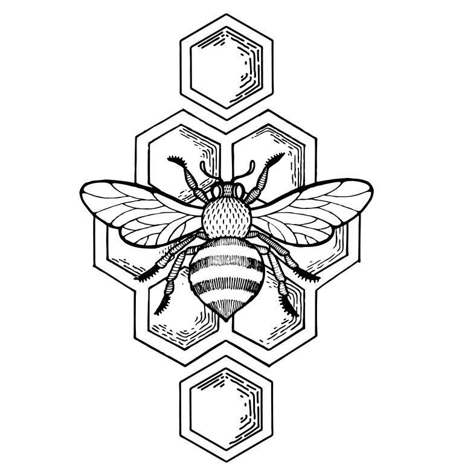

Un fagure este o masă de celule hexagonale de ceară prismatică construite de albine în cuiburi pentru a-și conține larvele și depozitele de miere și polen.Apicultorii pot îndepărta întregul fagure pentru a recolta mierea. Albinele consumă aproximativ 8,8 lb (3,8 kg) de miere pentru a secreta 1 lb (454 g) de ceară, deci este logic să readuceți ceara în stup după recoltarea mierii. Structura pieptenei poate fi lăsată practic intactă atunci când mierea este extrasă din ea prin desfăcere și rotire într-o mașină centrifugă - extractorul de miere. Dacă fagurele este prea uzat, ceara poate fi refolosită în mai multe moduri, inclusiv realizarea de foi de fundație pieptene cu model hexagonal. Astfel de foi de fundație permit albinelor să construiască pieptenele cu mai puțin efort, iar modelul hexagonal al bazelor de celule de dimensiunea lucrătorului descurajează albinele să construiască celulele mai mari ale bondarilor.